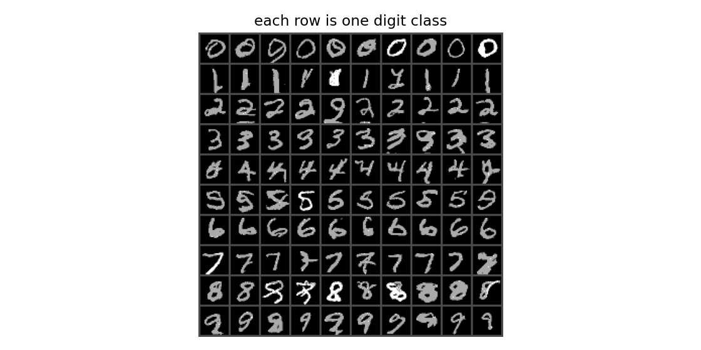

Study sheet
Interactive notes for Problems 1–6, with the lecture checks and the figures.
Open the study sheetAI MSc · Fall 2026 · DGM 25855
Homework 1, course 25732-1, Dr. Sajjad Amini. Written solutions, a teaching guide, and the coding assignment.
Interactive notes for Problems 1–6, with the lecture checks and the figures.
Open the study sheetConcepts from the foundation and autoregressive lectures, toy problems, then each homework part.
Read the PDFThe solution set, and the pass that checked it against the lecture notes.
Solutions · Lecture checkThe LaTeX for the guide, and the figures used in it.
HW1_tutorial.tex · FiguresOrder-agnostic MADE and a class-conditional gated PixelCNN. Each row below is one digit class. The supplied CNN reads 91 of these 100 samples as the class they were conditioned on.
